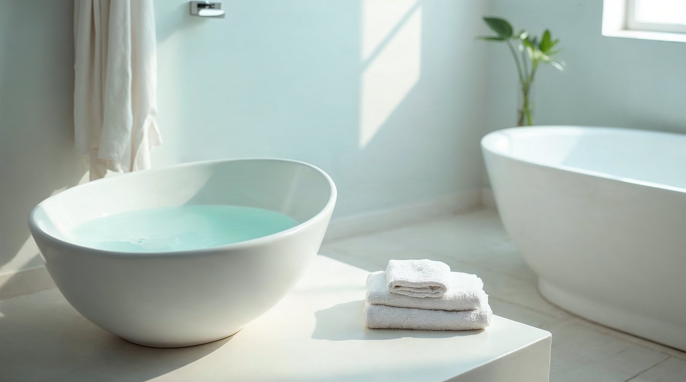
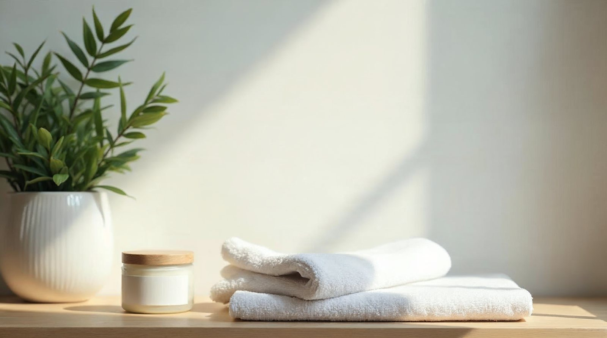
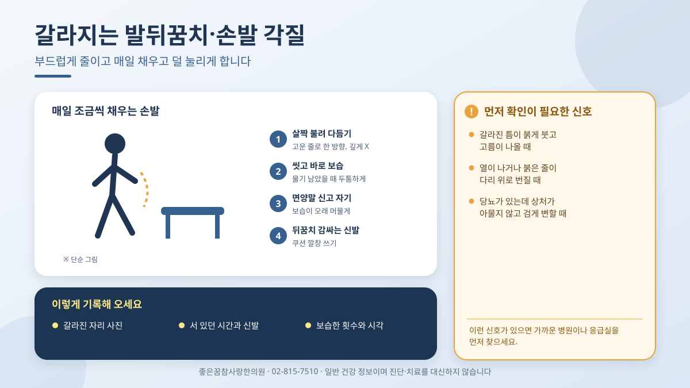

이종호 한의사 감수좋은꿈참사랑한의원 대표원장 (한의사 면허번호 19769)발행 2026-11-26 · 수정 2026-11-26
이 글의 차례
양말을 벗다가 발뒤꿈치에 실이 걸려 올이 풀립니다. 이불 속에서 발을 비비면 사각사각 소리가 나고, 뒤꿈치 가장자리는 하얗게 두꺼워져 있습니다. 갈라진 틈이 깊어진 날에는 걸음을 디딜 때마다 따끔해서 슬리퍼를 신기도 조심스럽습니다.
진료실에서 발이나 다리를 보아야 할 때가 있는데, 그때 뒤꿈치가 갈라져 있으면 많은 분이 먼저 "발이 지저분해서 죄송해요"라고 말씀하십니다. 그럴 때마다 저는 부끄러워하실 일이 아니라고 말씀드립니다. 발뒤꿈치 갈라짐은 하루 종일 몸무게를 받치는 자리가 건조해질 때 누구에게나 생길 수 있는 흔한 일입니다.
손도 마찬가지입니다. 손바닥이나 손가락 끝에 각질이 두껍게 앉고 갈라지면 물건을 잡을 때마다 걸리고, 장갑 속에서도 따갑습니다. 손발의 각질은 피부가 자신을 지키려고 두꺼워진 흔적이기도 해서, 한꺼번에 벗겨 내기보다 왜 두꺼워졌는지를 먼저 보아야 합니다.
이 글에서는 손발 각질과 발뒤꿈치 갈라짐이 왜 생기는지, 비슷한 피부 문제와 어떻게 다른지, 각질을 어떻게 다루고 어떤 습관을 들이면 좋은지, 진료실에서 무엇을 여쭙는지를 차례로 정리했습니다.
손발 각질과 갈라짐은 어떤 모습인가요
발뒤꿈치는 가장자리부터 하얗거나 누렇게 두꺼워지는 경우가 많습니다. 두꺼워진 각질은 탄력이 없어서, 걸을 때마다 뒤꿈치가 옆으로 퍼지는 힘을 견디지 못하고 쩍 갈라집니다. 처음에는 얕은 금이지만, 건조한 날이 이어지면 틈이 깊어져 피가 비치거나 따끔거립니다.
발바닥 앞쪽, 엄지발가락 옆, 새끼발가락 바깥처럼 신발과 자주 닿고 눌리는 곳에는 굳은살이 단단하게 앉습니다. 굳은살 가운데 단단한 심이 박힌 것처럼 눌렀을 때 콕 찌르듯 아프다면 티눈일 수 있어 따로 살펴봅니다.
손은 손가락 끝과 손바닥이 두꺼워지고 갈라지는 경우가 많습니다. 물일을 많이 하거나 공구, 운동 기구를 자주 쥐는 분에게서 흔하고, 겨울에는 손가락 끝이 갈라져 반창고를 달고 지내시기도 합니다. 각질이 일어나는 자리와 모양이 원인을 짐작하는 첫 단서가 됩니다.
왜 손발에 각질이 쌓이고 갈라질까요
손바닥과 발바닥에는 기름을 내는 피지샘이 거의 없습니다. 땀샘은 많아도 피부 표면을 덮어 줄 기름막이 부족해서, 공기가 건조해지면 다른 곳보다 수분이 빨리 날아갑니다. 그래서 겨울이나 난방이 센 실내에서 특히 잘 갈라집니다.
여기에 압력과 마찰이 더해집니다. 오래 서서 일하거나 많이 걷는 분, 뒤가 트인 슬리퍼나 샌들을 자주 신는 분, 몸무게가 늘어난 분은 뒤꿈치에 실리는 힘이 커집니다. 피부는 그 힘을 견디려고 각질을 두껍게 쌓는데, 두꺼워진 각질이 마르면 쉽게 갈라집니다.
몸 안의 변화도 영향을 줍니다. 나이가 들면 피부가 전체적으로 건조해지고, 당뇨가 있으면 발의 땀이 줄어 피부가 더 마르기 쉽습니다. 갑상선 기능이 떨어졌을 때도 피부가 거칠어지고 각질이 늘었다고 말씀하시는 분이 계십니다. 그래서 각질이 갑자기 늘었다면 몸 전체를 함께 살펴보게 됩니다.
한의학에서는 손발 끝까지 진액과 혈이 넉넉히 닿지 못해 피부가 마르는 모습으로 설명해 왔습니다. 이것은 진단명이 아니라, 진찰할 때 손발의 온도와 건조함, 식사와 잠, 피로를 함께 살피기 위한 전통적인 표현으로 이해해 주시면 됩니다.
비슷한 피부 문제와는 어떻게 다른가요
손발에 각질이 일어나는 것은 단순한 건조만은 아닐 수 있습니다. 헷갈리기 쉬운 것들을 나란히 놓아 보면 도움이 됩니다.
- 발 무좀: 발가락 사이가 하얗게 불어 갈라지거나, 발바닥 전체에 고운 가루 같은 각질이 일어납니다. 뒤꿈치만 두꺼운 것과 달리 발가락 사이와 발톱에 변화가 함께 있는 경우가 많습니다.
- 손 습진: 손가락 끝과 손등이 붉고 가려우며 갈라지고, 물일 뒤 따가움이 심해집니다. 가려움과 붉은기가 함께 있다는 점이 단순 각질과 다릅니다.
- 한포진: 손가락 옆이나 발바닥에 작은 물집이 먼저 생기고, 물집이 마르며 껍질이 벗겨집니다.
- 건선: 손바닥이나 발바닥에 경계가 뚜렷한 붉은 판 위로 두꺼운 각질이 쌓이며, 팔꿈치나 두피에도 비슷한 변화가 있는 경우가 많습니다.
단순한 각질과 갈라짐은 '눌리고 마르는 자리에' '가렵기보다 딱딱하고 따가운' 모습이 중심입니다. 가려움, 물집, 붉은 반점이 함께 있거나 손발톱이 변했다면 피부과에서 원인을 먼저 확인해 보시는 것이 좋습니다.
각질을 두고 자주 헷갈리는 것
첫째, 각질은 최대한 깨끗이 벗겨 내야 한다는 생각입니다. 칼이나 날카로운 도구로 깊게 깎아 내면 피부가 상처를 입고, 피부는 다시 자신을 지키려고 더 두꺼운 각질을 만듭니다. 두께를 조금 줄이는 정도로만 다듬는 것이 좋습니다.
둘째, 뜨거운 물에 오래 불리면 좋다는 생각입니다. 잠깐 불리는 것은 각질을 부드럽게 하지만, 뜨거운 물에 오래 담그면 피부의 기름막까지 씻겨 나가 마른 뒤 더 갈라질 수 있습니다. 미지근한 물에 5~10분 정도면 충분합니다. 물에서 나온 뒤에는 발가락 사이까지 물기를 꼼꼼히 닦아 주세요.
셋째, 크림을 한 번 듬뿍 바르면 된다는 생각입니다. 손발 각질은 매일 조금씩, 꾸준히 바르는 것이 훨씬 중요합니다. 씻은 직후 물기가 조금 남아 있을 때 바르고, 그 위에 면양말이나 면장갑을 끼면 보습이 오래 머뭅니다.
생활의 시기에 따라 달라지는 손발
겨울이 되면 실내외 모두 공기가 건조해지고, 보일러를 켠 바닥에서 맨발로 지내면서 뒤꿈치가 더 잘 마릅니다. 여름에는 샌들과 슬리퍼를 자주 신어 뒤꿈치가 바깥 공기와 마찰에 그대로 드러나 갈라지기 쉽습니다. 계절마다 이유가 달라서 관리도 조금씩 달라집니다.
오래 서서 일하시는 분, 매장이나 주방에서 일하시는 분은 하루 끝에 발바닥이 뜨겁고 화끈거린다고 말씀하시곤 합니다. 이런 분들은 신발 안쪽의 쿠션과 깔창만 바꿔도 뒤꿈치 각질이 덜 쌓이는 경우가 많습니다. 운동을 시작하며 많이 걷게 된 분도 비슷합니다.
나이가 드시면서 각질이 늘었다면 피부 전체의 건조함과 함께 보아야 합니다. 정강이와 등이 가렵고, 손발이 갈라지고, 입이 마르는 일이 함께 있다면 몸 전체의 수분과 잠, 드시는 약까지 함께 살펴보게 됩니다.
먼저 이렇게 여쭙니다
처음 오시면 저는 대략 이런 순서로 여쭙니다. 미리 생각해 오시면 이야기가 수월해집니다.
- 각질과 갈라짐이 심해진 것은 언제부터인가요?
- 하루에 서 있거나 걷는 시간은 어느 정도인가요?
- 평소 신는 신발과 실내에서 신는 것은 무엇인가요?
- 발가락 사이가 가렵거나 발톱 모양이 달라진 적이 있나요?
- 당뇨, 갑상선 질환이 있거나 관련 약을 드시나요?
- 발 감각이 둔하거나 저리고 시린 느낌이 있나요?
손이라면 하루 물일과 손 씻기 횟수, 장갑을 쓰는지, 공구나 운동 기구를 자주 쥐는지도 여쭙니다. 손발 각질은 생활의 습관이 그대로 남는 자리라서, 하루를 들어 보면 이유가 보이는 경우가 많습니다.
일상에서 먼저 해 볼 수 있는 것
손발 각질 관리는 '부드럽게 줄이고, 매일 채우고, 덜 눌리게' 하는 세 가지로 나눌 수 있습니다. 아래 습관 가운데 지금 할 수 있는 것부터 하나씩 해 보세요.
- 미지근한 물에 발을 5~10분 담근 뒤, 고운 각질 줄로 한 방향으로 살살 다듬기
- 칼이나 날카로운 도구로 깊게 깎지 않기
- 씻은 직후 물기가 조금 남았을 때 크림이나 연고를 두툼하게 바르기
- 잠들기 전 보습제를 바르고 면양말이나 면장갑을 끼고 자기
- 뒤가 트인 슬리퍼 대신 뒤꿈치를 감싸는 신발과 쿠션 있는 깔창 쓰기
- 실내 습도를 조금 올리고, 맨발로 뜨거운 바닥에 오래 있지 않기
보습제는 요소나 젖산처럼 각질을 부드럽게 해 주는 성분이 든 제품이 도움이 되기도 합니다. 다만 갈라진 틈이 깊어 따가울 때는 자극이 될 수 있어, 그때는 바셀린처럼 순한 연고로 틈을 먼저 덮어 주시는 편이 좋습니다.
갈라진 틈이 깊어졌다면 각질을 다듬는 것은 잠시 쉬고, 틈이 아물 때까지 연고를 바르고 덮어 두세요. 손이라면 물일할 때 고무장갑 안에 면장갑을 끼고, 일을 마치면 바로 손을 닦고 크림을 발라 주세요.

병원 진료와는 어떻게 함께 가나요
무좀이 의심되거나 가려움과 물집이 함께 있다면 피부과에서 원인을 먼저 확인해 보세요. 당뇨가 있다면 발 관리는 내과나 당뇨 진료를 보는 선생님과 함께 챙기시는 것이 좋고, 굳은살과 티눈을 직접 깎으시기보다 진료를 받으시길 권합니다. 처방받은 약은 처방한 선생님의 안내대로 이어 가셔야 합니다.
한의원 진료는 이런 진료를 대신하는 것이 아니라 나란히 갑니다. 병원에서 피부의 원인을 챙기고, 한의원에서는 손발의 온도와 건조함, 서 있는 자세와 걸음, 잠과 피로처럼 각질과 함께 움직이는 몸의 흐름을 살핀다고 생각해 주시면 됩니다.
한의원에서 함께 살필 수 있는 경우
- 손발이 차고 건조하며 겨울마다 갈라짐이 반복되는 경우
- 오래 서 있거나 걸은 뒤 발바닥과 뒤꿈치가 화끈거리고 아픈 경우
- 걸음걸이나 체중이 한쪽으로 실려 한쪽 뒤꿈치만 유난히 두꺼운 경우
- 나이가 들며 피부 전체가 건조해지고 잠이 얕아진 경우
좋은꿈참사랑한의원에 오시면 먼저 아래 '먼저 확인이 필요한' 신호가 없는지부터 봅니다. 그다음 맥을 짚고, 손발의 온도와 피부, 발바닥과 걸음을 함께 살핍니다. 필요하다고 판단되면 족저 검사로 체중이 실리는 자리를 확인하기도 합니다.
진찰한 내용을 바탕으로 생활에서 바꿔 볼 것 하나와 함께 침, 온열 관리, 한약 상담 가운데 지금 상태에 맞는 것을 정합니다. 한약을 상의할 때는 드시는 약을 모두 확인한 뒤 신중하게 정하고, 임신 중이시거나 임신 가능성이 있다면 먼저 알려 주시고 산부인과와도 상의해 주세요.
이렇게 기록해 오시면 상담이 쉬워집니다
손발 각질은 습관과 함께 적어야 흐름이 보입니다. 2~3주 정도만 간단히 적어 보세요.
- 각질과 갈라짐이 심한 자리, 가능하면 사진
- 하루 서 있거나 걸은 시간과 신었던 신발
- 보습제를 바른 횟수와 시각, 양말이나 장갑을 낀 날
- 갈라진 틈이 따갑거나 피가 비친 날
- 실내 습도와 난방, 맨발로 지낸 시간
- 손이라면 물일과 손 씻기 횟수
기록을 모아 보면 어떤 신발, 어떤 일과에서 각질이 늘어나는지가 보이기 시작합니다. 바꿀 것이 분명해지면 관리도 한결 쉬워집니다. 사진은 같은 자리를 같은 각도에서 찍어 두시면 일주일 사이의 변화도 알아보기 쉽고, 진료실에서 지난번과 비교해 보기에도 좋습니다.

매일 조금씩 채우는 손발
손발은 하루 종일 몸을 받치고 일하면서도 가장 늦게 챙기게 되는 곳입니다. 각질을 한 번에 없애려 하기보다, 매일 저녁 크림 한 번과 면양말 한 켤레처럼 작은 습관을 쌓아 가면 몇 주 뒤 뒤꿈치가 한결 부드러워진 것을 느끼실 수 있습니다.
가족 가운데 어르신이 계시다면 발을 직접 보기 어려우실 수 있어, 목욕을 도와드릴 때 뒤꿈치와 발가락 사이를 함께 살펴 드리면 좋습니다. 허리를 굽히기 힘든 분은 거울을 바닥에 두고 발바닥을 비춰 보는 방법도 있습니다.
당뇨가 있는 분은 매일 저녁 발을 씻은 뒤 발바닥과 발가락 사이를 한 번씩 살펴보는 습관을 들여 주세요. 작은 틈이나 물집을 일찍 알아차리는 것만으로도 발을 지키는 데 큰 도움이 됩니다.
이번 주에는 잠들기 전 발뒤꿈치에 보습제를 바르고 면양말을 신는 것 하나만 지켜 보세요. 다음에 오시면 그 주의 사진과 기록을 함께 보며 다음 걸음을 정하겠습니다.
이런 증상은 먼저 확인이 필요합니다
- 갈라진 틈 주변이 붉게 붓고 고름이 나오며 열이 나거나 붉은 줄이 다리 위로 번지는 경우
- 당뇨가 있는데 발의 상처가 아물지 않고 색이 검게 변하거나 감각이 둔해진 경우
이런 신호가 있으면 한의원보다 가까운 병원이나 응급실을 먼저 찾으세요.
함께 읽으면 좋은 글
- 발뒤꿈치 한가운데가 멍든 것처럼 아픈 지방패드 통증은 족저근막염과 어떻게 다르고 어떻게 살피나요?
- 물일을 하고 나면 손끝이 갈라지고 따가운 손 습진(주부습진)은 어떻게 살피나요?
- 손가락에 작은 물집이 잡히고 가려운 한포진은 어떻게 살피나요?
- 당뇨가 있는데 발끝이 저리고 화끈거리거나 감각이 둔해지는 말초신경병증은 어떻게 살피나요?
- 겨울이면 정강이가 하얗게 일어나고 밤에 가려울 때는 어떻게 살피나요?

여쭙는 것
- 각질과 갈라짐이 심해진 것은 언제부터인가요?
- 하루에 서 있거나 걷는 시간은 어느 정도인가요?
- 평소 신는 신발과 실내에서 신는 것은 무엇인가요?
생활에서 해 볼 것
- 미지근한 물에 발을 5~10분 담근 뒤, 고운 각질 줄로 한 방향으로 살살 다듬기
- 칼이나 날카로운 도구로 깊게 깎지 않기
- 씻은 직후 물기가 조금 남았을 때 크림이나 연고를 두툼하게 바르기
한의원에서 함께 살필 것
- 손발이 차고 건조하며 겨울마다 갈라짐이 반복되는 경우
- 오래 서 있거나 걸은 뒤 발바닥과 뒤꿈치가 화끈거리고 아픈 경우
- 걸음걸이나 체중이 한쪽으로 실려 한쪽 뒤꿈치만 유난히 두꺼운 경우
먼저 확인이 필요한 신호
- 갈라진 틈 주변이 붉게 붓고 고름이 나오며 열이 나거나 붉은 줄이 다리 위로 번지는…
- 당뇨가 있는데 발의 상처가 아물지 않고 색이 검게 변하거나 감각이 둔해진 경우
한눈에 보는 표
| 구분 | 핵심 |
|---|---|
| 여쭙는 것 | 각질과 갈라짐이 심해진 것은 언제부터인가요? 하루에 서 있거나 걷는 시간은 어느 정도인가요? |
| 생활에서 해 볼 것 | 미지근한 물에 발을 5~10분 담근 뒤, 고운 각질 줄로 한 방향으로 살살 다듬기 칼이나 날카로운 도구로 깊게 깎지 않기 |
| 한의원에서 함께 살필 것 | 손발이 차고 건조하며 겨울마다 갈라짐이 반복되는 경우 오래 서 있거나 걸은 뒤 발바닥과 뒤꿈치가 화끈거리고 아픈 경우 |
| 먼저 확인이 필요한 신호 | 갈라진 틈 주변이 붉게 붓고 고름이 나오며 열이 나거나 붉은 줄이 다리 위로 번지는 경우 당뇨가 있는데 발의 상처가 아물지 않고 색이 검게 변하거나 감각이 둔해진 경우 |
자주 묻는 질문
발뒤꿈치 각질은 얼마나 자주 다듬어야 하나요?
일주일에 한두 번, 미지근한 물에 잠시 불린 뒤 고운 각질 줄로 살살 다듬는 정도면 충분합니다. 너무 자주, 깊게 다듬으면 오히려 각질이 더 두꺼워질 수 있습니다.
갈라진 틈에서 피가 날 때는 어떻게 하나요?
각질 다듬기는 잠시 쉬고, 깨끗이 씻은 뒤 순한 연고를 발라 덮어 두세요. 틈이 붉게 붓거나 고름이 생기면 병원에서 확인을 받으시는 것이 좋습니다.
당뇨가 있는데 집에서 굳은살을 깎아도 되나요?
당뇨가 있으면 작은 상처도 잘 아물지 않을 수 있어서, 굳은살과 티눈은 직접 깎기보다 진료를 받으시길 권합니다. 매일 발을 살펴보고 보습을 챙기는 것이 먼저입니다.
발 각질과 무좀은 어떻게 구분하나요?
뒤꿈치만 두껍고 갈라지면 건조와 압력 때문인 경우가 많고, 발가락 사이가 불어 갈라지거나 발바닥 전체에 가루 같은 각질이 일고 발톱이 변했다면 무좀일 수 있습니다. 헷갈리면 피부과에서 확인해 보세요.
각질 제거 양말을 써도 되나요?
각질을 한꺼번에 벗겨 내는 제품은 피부가 예민하거나 갈라진 틈이 있을 때 따가울 수 있습니다. 당뇨가 있거나 피부가 약한 분은 쓰기 전에 담당 선생님과 상의해 주세요.
좋은꿈참사랑한의원은 재진 때 지난번 이야기부터 이어서 여쭙니다. 진료시간과 예약은 오시는 길에서 확인하세요.
어디서 상담받을 수 있나요?
좋은꿈참사랑한의원은 서울 동작구 만양로2길 2 신성빌딩 3층·5층(서울 동작구 상도동, 7호선 상도역 3번 출구 근처)에 있습니다. 한의사 3명(이종호 대표원장, 조영기 수석진료원장, 정원영 진료원장)이 진료합니다. 진료시간은 평일 09:30~20:00(점심 13:00~14:00), 토·일·공휴일 09:30~15:00이며, 방문 전 전화로 확인을 권합니다. 예약은 네이버 예약, 카카오톡 상담, 전화 02-815-7510로 받습니다.
이 글은 일반적인 건강 정보이며 개인의 진단이나 치료를 대신하지 않습니다. 증상이 있거나 복용 중인 약이 있다면 진료를 통해 확인하세요. 치료 효과는 개인마다 다를 수 있습니다.
작성 기준: 일반적으로 알려져 있는 건강 정보를 참고해 정리했습니다(대표원장 감수). 증상 기록은 1~2주 동안 하루 1회, 비슷한 시간에 적어 오시면 지난 상태와 비교하기 쉽습니다.